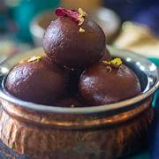
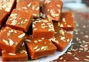
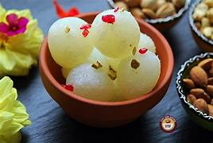
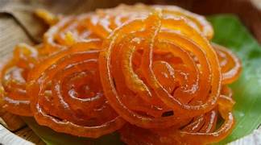
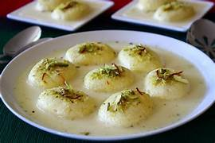
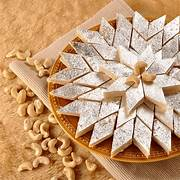

Gulab Jamun

Ingredients
- 1 cup full-fat milk powder
- 2 tablespoons all-purpose flour
- 1/8 teaspoon baking powder
- 1 tablespoon ghee (You can find it at the store or make ghee from scratch.)
- 5 to 6 tablespoons milk, as needed
- Oil for deep-frying
Directions
- Step 1: Prepare the dough
- Step 2: Let the dough rest
- Step 3: Prepare the sugar syrup
- Step 4: Roll the jamuns
- Step 5: Fry the jamuns
- Step 6: Add jamuns to the sugar syrup
- Step 7: Garnish
Barfi

Ingredients
- 50 g Butter
- 300 g Milk Powder
- 100 g Sugar
- ½ tsp Cardamom Powder
- 200 ml Milk
- Almonds crushed
- Pistachios crushed
Instructions
- Step1: In a greased baking tin add the crushed almonds and pistachios – leave some crushed nuts for the top as well
- Step2: On low heat add the butter and allow to melt completely
- Step3: Once heated add the milk powder in small increments stirring continuously to break the lumps and keep mixing until everything is incorporated
- Step4: Add the sugar and cardamom powder then fold the mixture continuously on low heat for 10 minutes
- Step5: Add mixture into the baking tin then top with the remaining almonds and pistachios then leave to set for 1 hour
- Step6: Serve alongside some freshly brewed tea and enjoy!
Rasgulla

Ingredients
- 2 litre milk
- 1½ cup sugar
- 1 teaspoon rose water
- 3 tablespoon lime juice
- 3 cup water
- 1 tablespoon all purpose flour
- 2 teaspoon powdered green cardamom
Instructions
- Step1: Prepare the chhena
- Step2: Strain the chhena from whey
- Step3: Strain the whey
- Step4: Allow the water to separate
- Step5:Prepare sugar syrup
- Step6:Knead the chhena
- Step7: Boil the rasgullas
- Step8:Cook covered
- Step9:Enjoy!
Jalebi

Ingredients
- 3 cup all purpose flour
- ½ cup corn flour
- 2 cup hung curd
- ½ cup ghee
- 1 ½ pinch baking soda
- 2 cup sunflower oil
- 3 cup sugar
- 3 cup water
- 5 strand saffron
- 4 drops rose essence
- ½ teaspoon powdered green cardamom
- ½ teaspoon edible food color
Instructions
- Step1:Prepare the Jalebi batter and let it ferment overnight
- Step2: Deep fry the Jalebis
- Step3: Soak the Jalebis in sugar syrup and serve
Rasmalai

Ingredients
- Milk 10 cups
- White vinegar 8 teaspoons
- Refined flour (maida) 1 tablespoon
- Cornflour/ corn starch 1/2 teaspoon
- For Syrup
- Sugar 1.2 kilograms
- Milk 2 tablespoons
- For Rabdi
- Milk 10 cups
- Sugar 6 tablespoons
- Saffron (kesar) a few
- Pistachios for garnishing
Instructions
- Step1: For the chhenna, bring the milk to a boil over high heat. Set aside to cool slightly to 77°C/170°F.
- Step2: Mix the vinegar in one and three-fourth cups of water and add to the hot milk. Stir lightly till the milk curdles. Add three to four cups of water and a few ice cubes and stir.
- Step3:Strain the chhenna through a piece of muslin and squeeze to remove all the water. You should have 250 grams of chhenna.
- Step4:
Transfer the chhenna onto a worktop. Mix together half teaspoon of refined flour and the cornflour and add to the chhenna. Knead, pressing with the heel of your hand, till the mixture is smooth.
- Step5:Divide into twenty-five portions and roll into balls and then press lightly to make patties, taking care that there are no cracks. Mix the remaining refined flour with half a cup of water and set aside.
- Step6:To make the syrup, cook the sugar with five cups of water, stirring continuously till all the sugar dissolves. Add the milk and let the syrup come to a boil. Collect the scum which rises to the surface with a ladle and discard.
- Step7: Boil the rasgullas
- Step8:Take one cup of the syrup, reserving the rest, in a deep, wide non-stick pan and add four to five cups of water. When the syrup begins to boil add the chhenna patties. Add half the flour-water mixture. The syrup will froth. Cook, gently agitating the syru
- Step9:Slowly drizzle half a cup of water along the sides of the pan every five minutes so that the syrup does not thicken. Continue cooking for fifteen minutes or till the chhenna patties spring back when pressed. This is a sign that they are cooked.
- Step10:Remove from the syrup with a slotted spoon and place in the reserved syrup.
- Step11:To make the rabdi, bring the milk to a boil in a deep, thick-bottomed non-stick pan on high heat Lower heat to medium and cook, stirring, till it reduces to three-fourth its original volume. Scrape off the cream that will collect on the sides of the pan and drop it back into the milk.
- Step12:Add the sugar and saffron, and cook for five minutes longer. Transfer to a deep bowl. Remove each chhenna patty from the syrup, gently press to remove excess syrup and dip into the rabdi.
- Step13:Chill for at least two hours so that the chhenna patties absorb the rabdi. Serve.
Kaju Katli

Ingredients
- 2 cups (268g) raw cashews
- 1 cup (200g) granulated white sugar
- 1/2 (118g) cup water
- 1 teaspoon ghee or coconut oil
- 1/4 teaspoon ground cardamom
- Flaky finishing salt (optional)
- Edible silver leaf, for coating
- 3/4 teaspoon edible rose water (optional)
Instructions
- Step1: Grind the cashews into a powder
- Step2: Make the sugar syrup.
- Step3:Make the cashew dough.
- Step4:
Prepare parchment and place dough to cool:
- Step5:Roll out the dough.
- Step6:Place silver leaf on the dough
- Step7: Boil the rasgullas
- Step8:Cut the Kaju Katli
- Step9:Let the kaju katli set, then serve